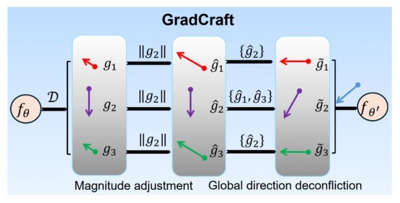
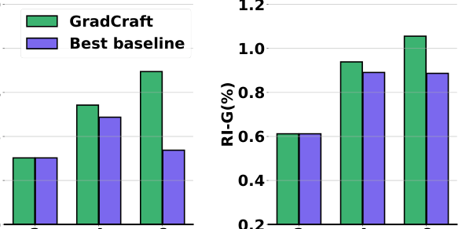

GradCraft: Elevating Multi-task Recommendations through Holistic Gradient Crafting (以整体梯度整形提升多任务推荐)
- 会议/期刊: KDD 2024 (arXiv 2407.19682v2)
- 作者与机构: Yimeng Bai, Yang Zhang, Fuli Feng (USTC) 与 Jing Lu, Xiaoxue Zang, Chenyi Lei, Yang Song (快手)
- 推荐链路定位: 精排（多目标预估的优化器层面，模型无关）
- 研究方向: 多任务学习与列表级重排 / CTR/CVR 预估与特征交叉
- 论文原文: https://arxiv.org/abs/2407.19682v2
- 开源代码: https://github.com/baiyimeng/GradCraft
TL;DR (1分钟核心速览)
短视频推荐需同时优化完播、点赞、关注、转发等异质目标，任务间梯度范数相差数个数量级、更新方向互相拉扯，导致负迁移。现有做法要么只按 loss 重加权（治幅度不治方向），要么像 PCGrad 只做成对投影（后一次投影会破坏前一次已取得的非冲突，且不考虑幅度干扰）。GradCraft 把多任务优化拆成两步：先以最大梯度范数为锚做柔性插值对齐幅度，再让每个任务对全部冲突任务同时投影求解闭式权重，并以 \(\epsilon>0\) 要求一定正相似度促进正迁移。在 PLE 主干的 Wechat/Kuaishou 上，AV-G 相对提升 1.056%/3.791%，线上快手 1500 万用户 A/B 一周 VV +0.950%、Share +1.746%。
Background & Motivation (背景与核心矛盾)
- 主流范式: 工业多任务推荐 = 软参数共享主干（MMoE/PLE）+ 梯度层面的优化器改造；后者分两支：按不确定性/更新速度重加权 loss（UC、DWA、DBMTL），或操纵梯度方向去冲突（MGDA、PCGrad、GradVac、CAGrad、IMTL）。
- 前人局限 1（方向）: 方向类方法几乎都是成对投影，\(T\)个任务有\(O(T^2)\) 个冲突对，前一对投影后的梯度会重新与第三任务冲突，无法保证全局非冲突；且投影时直接用原始梯度，被大幅值任务主导。
- 前人局限 2（幅度）: 重加权类只调 loss 系数、不看梯度几何，在推荐场景的极端任务异质性（曝光稀疏 vs 稠密交互）下性能不稳定，甚至劣于 Equal Weight。
- 核心洞察 (Key Insight): 作者把多任务优化提炼为两个必须同时满足的目标——"适当的幅度平衡"与"全局方向平衡"；且幅度平衡应先行，因为幅度失衡会污染后续方向操纵；而且不必追求绝对等范数，只需防止范数跨越数量级，以保留任务特异性。
- 本文切入点: 顺序式两阶段范式（幅度对齐 → 全局投影），且把方向目标从"正交"放宽到"适度正相似"。
Method (核心方法设计)
1. 整体框架 (Overall Architecture)
输入用户/短视频特征，经 PLE 主干（共享专家 + 任务专属专家 + 门控 + 塔，专家为 DeepFM）输出 \(T\)个任务的 logits，各以 BCE 计算损失。每步迭代先反传得到各任务梯度\(g_i\)；再做梯度整形：①幅度对齐把\(\|g_i\|\)向全局最大范数柔性插值（\(\tau\)控制），②方向去冲突对每个任务一次性对所有冲突任务联合投影（\(\epsilon\)控制期望正相似度），解出闭式权重得到\(\tilde{g}_i\)；最后等权平均\(\tilde{g}_i\) 更新共享参数，任务专属专家仍按各自梯度更新，可无缝嵌入 Adam/Adagrad。
flowchart TD
A["用户/视频特征 → PLE + DeepFM 专家"] --> B["T 个任务 BCE 反传得到 g_i"]
B --> C["幅度对齐: 向 max_j||g_j|| 柔性插值 (τ)"]
C --> D["全局方向去冲突: 对全部冲突梯度联合投影 (ε>0)"]
D --> E["等权聚合 Σġ_i/T → 更新共享参数"]
2. 关键设计拆解 (Key Designs)
-
柔性幅度对齐 (Magnitude Adjustment)：痛点是不对齐时范数可差数个数量级、投影被大任务支配，而 DBMTL 式硬对齐到最大范数又放大小任务的随机噪声。本文改为与原始梯度插值： $\(\hat{g}_i=\tau\frac{\max_j\|g_j\|}{\|g_i\|}g_i+(1-\tau)g_i\)$ 由此保证任务间最大/最小范数比不超过 \(1/\tau\)，\(\tau\) 越小越贴近最大范数。物理直觉：只压缩"支配性差距"，保留任务本身的梯度尺度信息。
-
全局方向去冲突 (Global Direction Deconfliction)：对任务 \(i\)取其全部冲突梯度矩阵\(G_i=[\hat{g}_{i1},\dots,\hat{g}_{in}]\in\mathbb{R}^{n\times d}\)，不再逐对处理，而是同时要求解冲突后梯度与所有冲突任务达到目标内积： $\(G_i\tilde{g}_i^{\top}=z,\quad z=[\epsilon\|\hat{g}_i\|\|\hat{g}_{i1}\|,\dots,\epsilon\|\hat{g}_i\|\|\hat{g}_{in}\|]\)$ 令 \(\tilde{g}_i=\hat{g}_i+w^{\top}G_i\)，在\(d\gg n\)、\(G_iG_i^{\top}\) 正定的前提下得闭式解 $\(w=(G_iG_i^{\top})^{-1}\left(-G_i\hat{g}_i^{\top}+z\right)\)$ \(\epsilon=0\)即正交化，\(\epsilon>0\)强制保留适度正相似以促进正迁移。该式是 PCGrad 的严格推广：当仅一个冲突对且\(\epsilon=0\)时退化为\(\tilde{g}_i=\hat{g}_i-\frac{\langle\hat{g}_i,\hat{g}_{i1}\rangle}{\|\hat{g}_{i1}\|^2}\hat{g}_{i1}\)；由于是一次性联合求解，投影之间不再相互破坏，从而"全局"非冲突。
-
训练目标、开销与推理：总损失即 \(\sum_{i=1}^{T}\text{BCE}(f_\theta(x)_i,y_i)\)，更新为\(\theta'=\theta-\eta\frac{1}{T}\sum_i\tilde{g}_i\)；无负采样（pointwise CTR 式训练）。额外开销仅为每任务一次\(n\times n\)（\(n\le T-1\)）矩阵求逆，与参数量\(d\) 无关，可忽略；推理阶段零额外开销，纯训练期插件。
Experimental Setup & Evaluation Protocol (实验设置与评估协议)
- 数据集与预处理:
| 数据集 | #Users | #Items | #Interactions | 稀疏度/密度 | 特征/场景说明 |
|---|---|---|---|---|---|
| 19,997 | 59,322 | 7,154,154 | 0.0060 | 微信大数据挑战赛短视频两周行为，10-core 过滤 | |
| Kuaishou | 8,516 | 62,699 | 2,867,290 | 0.0054 | 快手 1 万用户 5 天真实短视频曝光，20-core 过滤 |
- 数据划分与防穿越: 随机 8:1:1 比例划分（train/valid/test），非时间戳切分，亦非冷启动划分。
- 排名评测协议: 严格说是 pointwise 多目标预估协议，用逐样本 AUC 与用户内分组 GAUC，并非 Full-Ranking 全库排序，也无采样负样本比；报告跨任务均值 AV-A/AV-G 与相对 Single 的 RI-A/RI-G。
- 任务设置: 6 个二值任务——观看类 EV(>50%)、LV(>75%)、CV(完播)，交互类 Like、Follow、Forward。
- 对比基线与超参: 基线含 Single、EW、UC、DWA、MGDA、PCGrad、PCGrad+（作者自建：PCGrad + 式(5) 幅度对齐的公平对照）、GradVac、CAGrad、IMTL、DBMTL。统一 PLE + DeepFM 专家主干，embedding \(d=16\)，MLP 256×128×64，塔 32×16，Adam，early stopping patience 10；\(\tau\)以 0.1 步长网格搜\([0,1]\)，\(\epsilon\in\{0,10^{-12},\dots,10^{-7}\}\)，最优\(\tau=0.1\)、\(\epsilon=10^{-10}\)。
Key Experimental Results (实验关键数据)
1. 主实验对比 (Main Results)
| 方法 | Wechat AV-A | RI-A | AV-G | RI-G | Kuaishou AV-A | RI-A | AV-G | RI-G |
|---|---|---|---|---|---|---|---|---|
| Single | 0.8361 | 0.000% | 0.6770 | 0.000% | 0.8368 | 0.000% | 0.6849 | 0.000% |
| EW | 0.8369 | 0.091% | 0.6798 | 0.413% | 0.8390 | 0.280% | 0.7040 | 3.248% |
| DWA | 0.8367 | 0.078% | 0.6809 | 0.559% | 0.8384 | 0.197% | 0.7061 | 3.601% |
| MGDA | 0.8309 | -0.639% | 0.6718 | -0.809% | 0.8302 | -0.817% | 0.6860 | 0.457% |
| PCGrad | 0.8371 | 0.118% | 0.6830 | 0.887% | 0.8397 | 0.355% | 0.7039 | 3.243% |
| PCGrad+ | 0.8373 | 0.135% | 0.6802 | 0.472% | 0.8435 | 0.811% | 0.7064 | 3.671% |
| CAGrad | 0.8369 | 0.099% | 0.6815 | 0.653% | 0.8431 | 0.758% | 0.7045 | 3.351% |
| DBMTL | 0.8350 | -0.129% | 0.6796 | 0.380% | 0.8424 | 0.682% | 0.7048 | 3.402% |
| GradCraft | 0.8385 | 0.278% | 0.6842 | 1.056% | 0.8438 | 0.844% | 0.7071 | 3.791% |
| Improv. vs 次优 | +0.12pp | +0.143pp | +0.12pp | +0.169pp | +0.03pp | +0.033pp | +0.07pp | +0.120pp |
单任务亮点：Wechat 上 Follow AUC 从 Single 的 0.8829 提升至 0.8888（+0.59pp），是该表最大的单点增益；Kuaishou 上 Forward GAUC 达 0.6425。
2. 消融实验 (Ablation Study)
| 变体 (Wechat) | AV-A | RI-A | AV-G | RI-G |
|---|---|---|---|---|
| GradCraft 完整版 | 0.8385 | 0.278% | 0.6842 | 1.056% |
| w/o 正相似目标 (\(\epsilon=0\)) | 0.8382 | 0.250% | 0.6837 | 0.981% |
| w/o 柔性幅度 (\(\tau=1\)，硬对齐 max norm) | 0.8365 | 0.039% | 0.6798 | 0.392% |
| w/o 幅度对齐 (\(\tau=0\)，保留原范数) | 0.8370 | 0.113% | 0.6835 | 0.959% |
| w/o 全局投影 (退回 PCGrad 成对投影) | 0.8371 | 0.118% | 0.6830 | 0.887% |
3. 关键实验发现 (Key Findings)
- 幅度对齐是方向去冲突的前提条件：去掉幅度对齐后，"全局投影"与"成对投影"几乎无差（AV-G 0.6835 vs 0.6830），说明幅度失衡时投影的解会被大梯度任务带偏、全局性无从体现；而带幅度对齐的 PCGrad+ 仍显著低于 GradCraft（AV-G 0.6802 vs 0.6842，RI-G 0.472% vs 1.056%），证明两阶段耦合而非单点改进带来收益。
- "适度"而非"绝对"对齐：\(\tau=1\)硬对齐到最大范数是所有变体中最差（RI-G 仅 0.392%，甚至低于完全不对齐的 0.959%），因为小任务梯度被等比例放大、噪声同步放大；\(\tau=0.1\)为最优，且\(\tau\in[0,0.3]\)、\(\epsilon\in[10^{-12},10^{-9}]\) 区间性能平稳，工程上可直接沿用默认值。
- 优势随任务数扩大，且在 \(T=2\)时退化合理：\(T=2\to6\)时 GradCraft 的 RI-A/RI-G 单调上升而最优基线基本持平，性能差距随\(T\)拉大；\(T=2\) 时两者几乎重合，恰与式(11) 的单冲突对退化分析一致——这是方法自洽性的证据，也界定其适用边界（多任务越多越划算）。线上快手 1500 万用户一周 A/B：WT +0.505%、VV +0.950%、Share +1.746%，均超显著性阈值。

Highlights & Limitations (亮点、对比与审稿批判)
- 与代表作对比: vs PCGrad：成对投影且忽略幅度，本文改为一对多联合闭式投影 + 前置幅度对齐；vs DBMTL：硬绑最大范数并使所有梯度同尺度，本文用 \(\tau\) 插值保留任务特异性（消融显示硬对齐反而最差）；vs CAGrad：只在平均梯度球内约束更新向量模长，未逐个修正任务梯度幅度；vs MetaBalance：以目标任务梯度为刚性锚点、面向多行为迁移，本文以全局最大范数动态为锚、面向多目标并重。
- 可迁移亮点: ①"先幅度后方向"的顺序范式可直接套到任何多目标排序模型（MMoE、AdaTT、ESMM）的优化器上，推理零成本；②把去冲突目标从正交放宽到 \(\epsilon\) 正相似，是可复用的"柔性约束"技巧，避免投影过度损伤共享知识。
- 审稿级局限批判: ①评估仅有 pointwise AUC/GAUC，缺 NDCG/全库排序与长尾、冷启动分桶，且随机 8:1:1 划分存在同用户跨集泄漏风险，收益幅度可能被高估；②\(\epsilon\)最优值落在\(10^{-10}\)这种量纲强相关的小量级网格上，跨数据集需重搜，泛化成本不低；③只更新共享参数，任务专属专家未纳入整形，理论与实现间留有缝隙；④未给出\(T\) 很大（如数十任务）时的求逆与吞吐实测，快手线上也只报了相对基线的收益、未报训练耗时增量。
Rating (四维评分)
- 方法创新性 (Novelty): ⭐⭐⭐⭐ （把多任务优化重述为"幅度+全局方向"双平衡，并用一次联合投影取代成对投影，虽属梯度手术路线的自然延伸，但闭式推广与 \(\epsilon\) 柔性目标是清晰增量）
- 评估协议与实验扎实度 (Protocol & Experiments): ⭐⭐⭐⭐ （两个真实短视频数据集 + 11 个基线 + 自建公平对照 PCGrad+ + 消融/超参/任务数分析 + 1500 万用户线上 A/B，唯缺排序类指标与时间戳切分）
- 写作与数学规范度 (Clarity & Rigor): ⭐⭐⭐⭐ （闭式解推导完整、给出退化到 PCGrad 的等价性证明与 \(d\gg n\)可逆性论证，符号统一；但\(\epsilon\) 的量纲含义与最优量级缺乏理论解释）
- 工业落地与复现价值 (Industrial & Practical Value): ⭐⭐⭐⭐⭐ （推理零开销、模型无关、代码开源、线上三指标全正，是少见的可直接插入现有精排训练流程的优化器插件）